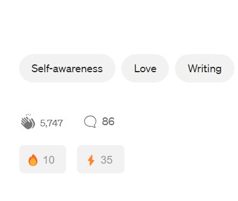

Easy Clapping
Automate your claps with a single click, making it easier and faster to show appreciation.
Enhancing Articles Engagement with a Single Click
Automate your claps with a single click, making it easier and faster to show appreciation.
Intuitive and clean design that seamlessly integrates with Medium.
❝ SuperClap was inspired by the tedious process of clapping multiple times on Medium articles.
As a frequent reader, I wanted a way to simplify this process so as to enhance user engagement. ❞